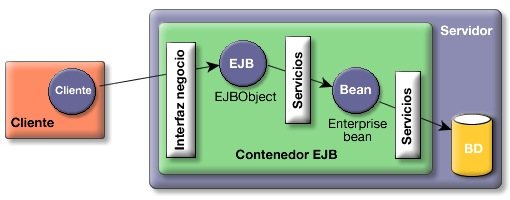

Introducción a los Enterprise JavaBeans
En este módulo del Título de Especialista vamos a presentar la tecnología Enterprise JavaBeans. Se trata de una tecnología que permite definir componentes que encapsulan objetos de negocio gestionados por un servidor de aplicaciones.
Antes de empezar, es importante realizar una aclaración sobre la versión de la arquitectura que vamos a estudiar en las próximas sesiones. Recientemente se ha presentado la última versión de la especificación EJB, la 3.0. En ella se introducen cambios muy importantes con respecto a la 2.1, la versión anterior. Entre estos cambios destacan la utilización de anotaciones para definir los beans, sustituyendo a los ficheros de descripción de propiedades XML, y la introducción de un framework de persistencia muy similar a Hibernate, el JPA (Java Persistence API). Estas novedades simplifican bastante el desarrollo de los enterprise beans, y es previsible que la nueva especificación tarde poco en ser adoptada por la industrian. Sin embargo, hoy por por hoy la gran mayoría de servidores de aplicaciones todavía no han dado el salto a la especificación 3.0.
En el módulo vamos a presentar la arquitectura EJB, utilizando la especificación más usada (por ahora) la 2.1 para definir beans de sesión. En las últimas sesiones del módulo realizaremos una breve introducción a la especificación 3.0, comentando sobre todo el uso de anotaciones y JPA.
Para la especificación 2.1 utilizaremos BEA WebLogic 9.2 como servidor de aplicaciones y BEA Workshop como entorno de desarrollo. Para la sesión en la que hablaremos de la especificación 3.0 utilizaremos la versión pre-release BEA WebLogic 10 (todavía en pruebas).
Componentes manejados por el servidor de aplicaciones
Comenzamos este nuevo módulo con una comparación que ayudará a entender qué es la arquitectura Enterprise JavaBeans (EJB). Lo mejor es compararla con algo que ya conocemos y que hemos estudiado en produndidad: la arquitectura de las aplicaciones Web. Esta última arquitectura permite el desarrollo de aplicaciones distribuidas cliente-servidor. Los clientes (navegadores Web) realizan peticiones a un servidor. Las peticiones se realizan en un protocolo especial (HTTP) que nos permite definir la petición y los argumentos que se pasan al servidor. El servidor recoge la petición, comprueba ciertos permisos (seguridad) y, si todo es correcto, la ejecuta mediante la llamada al servlet (código Java) asociado a la petición. El servlet recoge los parámetros de la petición, los procesa, consulta recursos del servidor (bases de datos, objetos, etc.) y devuelve el resultado, en forma de texto HTML.
Supongamos que tenemos un servidor que gestiona una empresa de mensajería y queremos saber los pedidos que va a entregar un agente determinado. La forma de hacerlo siguiendo esta arquitectura sería realizar una petición HTTP en la que pondríamos algo parecido a /listaPedidos?agente=107 con la que pedimos la lista de pedidos asignada al agente 107. El resultado sería un código HTML parecido a:
<ul> <li>Pedido id=883247110</li> <li>Pedido id=392349429</li> <li>Pedido id=232494592</li> <li>Pedido id=945821134</li> </ul>
El navegador interpretará este texto HTML y mostrará la lista de pedidos por pantalla. Este tipo de comportamiento puede ser apropiado si queremos mostrar el listado de pedidos. Pero si queremos que esta respuesta sea procesada por un programa que realiza algún proceso con los identificadores de los pedidos, el enfoque ya no es tan apropiado.
Podríamos definir un cliente Java que (utilizando las librerías de red) realizara una petición HTTP y recogiera la respuesta (fichero de texto HTML). El proceso debería recoger el HTML, descodificarlo (buscando ciertas etiquetas que deberíamos saber que están ahí) y obtener los identificadores. Los problemas son muy grandes. No sólo de programación, sino de mantenimiento. Si en un momento alguien cambia el texto devuelto por el servlet, hay que cambiar el código del proceso que descodifica el resultado.
¿No sería interesante poder escribir un código Java en el cliente que pidiera los datos "directamente" al servidor? Sin utilizar el protocolo HTTP, sino de una forma mucho más directa. Por ejemplo:
(1) PedidosFactory pedidosFactory = getPedidosFactory(serverConection);
(2) Pedidos pedidos = pedidosFactory.create();
(3) List<PedidoTo> listaPedidos = pedidos.getLista("107");
En la primera instrucción obtenemos una factoria de Pedidos. Esta factoría crea a su vez objetos de tipo Pedidos (con el método create) con los que podremos realizar directamente peticiones relacionadas con los pedidos. En línea 2 se crea un objeto de esta clase. Después (línea 3) usamos ese objeto para pedir el método getLista que devuelve una lista de pedidos (transfer objects de tipo PedidoTo) asociados al agente "107". Esta vez obtenemos una lista de objetos Java, que podemos procesar con sus métodos get correspondientes. Esta forma de obtener una lista de pedidos es mucho más sencilla (y mantenible) que descodificar un fichero de texto.
Las tres llamadas del ejemplo anterior son remotas, realizadas desde un cliente en una máquina virtual (u ordenador) hacia un ordenador remoto en el que reside un servidor que procesa estas peticiones.
El servidor del oordenador remoto recibe las peticiones, las "analiza" y las responde, incorporando sus funcionalidades añadidas (ver el siguiente apartado).
La arquitectura Enterprise JavaBeans permite este tipo de funcionamiento. El nombre que recibe el servidor que procesa este tipo de peticiones es el de contenedor EJB. El contenedor mantiene los objetos remotos y procesa las peticiones de los clientes, de la misma forma que un servidor web contiene aplicaciones web y procesa peticiones HTTP. Sin embargo, en esta arquitectura las peticiones son más similares a las llamadas a procedimientos remotos, en las que se intenta que la red sea transparente y que parezca que estamos llamando a un objeto normal situado en la propia máquina virtual del cliente.
Para posibilitar esta arquitectura, el programador y diseñador debe implementar componentes que residen en el contenedor EJB. En este módulo veremos cómo hacerlo. También analizaremos cuáles son las posibilidades y limitaciones de estas entidades nuevas denominadas componentes EJB.
El desarrollo basado en componentes promete un paso más en el camino de la programación orientada a objetos. Con la programación orientada a objetos puedes reutilizar clases, pero con componentes es posible reutilizar funcionalidades de mayor nivel e incluso es posible modificar estas funcionalidades y adaptarlas a cada entorno de trabajo particular sin tocar el código del componente desarrollado. Aunque veremos el tema con mucho más detalle, en este momento puedes ver un componente como un objeto tradicional que reside en un contenedor que soporta y ofrece al cliente un conjunto de servicios adicionales en tiempo de ejecución. El contenedor se denomina contenedor EJB y es algo así como el sistema operativo en el que éstos residen. El servicio de contenedor EJB es uno de los servicios proporcionados por los servidores de aplicaciones.
La implementación de los componentes EJB remotos se basa en el modelo de programación de objetos remotos de Java, denominado RMI. Con RMI es posible enviar peticiones a objetos que están ejecutándose en otra máquina virtual Java. Podemos ver un componente EJB como un objeto remoto RMI que reside en un contenedor EJB que le proporciona un conjunto de servicios adicionales. Para el desarrollador de componentes EJB es útil el conocimiento de RMI a nivel teórico, porque explica qué está sucediendo por debajo de la capa de abstracción proporcionada por la arquitectura EJB.
Cuando se está trabajando con componentes se tiene que dedicar tanta atención al despliegue (deployment) del componente como a su desarrollo. Entendemos por despliegue la incorporación del componente a nuestro contenedor EJB y a nuestro entorno de trabajo (bases de datos, arquitectura de la aplicación, etc.). El despliegue se define de forma declarativa, mediante un fichero XML (descriptor del despliegue, deployment descriptor) en el que se definen todas las características del bean.
El desarrollo basado en componentes ha creado expectativas sobre la aparición de una serie de empresas dedicadas a implementar y vender componentes específicos a terceros. Este mercado de componentes nunca ha llegado a tener la suficiente masa crítica como para crear una industria sostenible. Esto es debido a distintas razones, como la dificultad en el diseño de componentes genéricos capaces de adaptarse a distintos dominios de aplicación, la falta de estandarización de los dominios de aplicación o la diversidad de estos dominios. Aun así, existe un campo creciente de negocio en esta área, que está resurgiendo por la aparición de interfaces HTTP contra estos componentes formando los denominados servicios web.
Por último, comentar que no siempre los componentes EJB son distribuidos. Es posible utilizar componentes EJB de forma local y hacer que un proceso (un servlet, por ejemplo) se comunique de forma local con un componente EJB que reside en la misma máquina virtual (el mismo servidor de aplicaciones). Aun en este caso, todas las peticiones al componente serán analizadas y gestionadas por el contenedor EJB, proporcionando servicios como la seguridad o transaccionalidad.
Servicios proporcionados por el contenedor EJB
En el apartado anterior hemos comentado que la diferencia fundamental entre los componentes y los objetos clásicos reside en que los componentes viven en un contenedor EJB que los envuelve proporcionando una capa de servicios añadidos. ¿Cuáles son estos servicios? Los más importantes son los siguientes:
- Manejo de transacciones: apertura y cierre de transacciones asociadas a las llamadas a los métodos del bean.
- Seguridad: comprobación de permisos de acceso a los métodos del bean.
- Concurrencia: llamada simultánea a un mismo bean desde múltiples clientes.
- Servicios de red: comunicación entre el cliente y el bean en máquinas distintas.
- Gestión de recursos: gestión automática de múltiples recursos, como colas de mensajes, bases de datos o fuentes de datos en aplicaciones heredadas que no han sido traducidas a nuevos lenguajes/entornos y siguen usándose en la empresa.
- Persistencia: sincronización entre los datos del bean y tablas de una base de datos.
- Gestión de mensajes: manejo de Java Message Service (JMS).
- Escalabilidad: posibilidad de constituir clusters de servidores de aplicaciones con múltiples hosts para poder dar respuesta a aumentos repentinos de carga de la aplicación con sólo añadir hosts adicionales.
- Adaptación en tiempo de despliegue: posibilidad de modificación de todas estas características en el momento del despliegue del bean.
Piensa en lo complicado que sería programar una clase "a mano" que implementara todas estas características. Como se suele decir, la programación de EJB es sencilla si la comparamos con lo que habría que implementar de hacerlo todo por uno mismo. Evidentemente, si en la aplicación que estás desarrollando no vas a necesitar estos servicios podrías utilizar simplemente páginas JSP y JDBC.
Funcionamiento de los componentes EJB
El funcionamiento de los componentes EJB se basa fundamentalmente en el trabajo del contenedor EJB. El contenedor EJB es un programa Java que corre en el servidor y que contiene todas las clases y objetos necesarios para el correcto funcionamiento de los enterprise beans.
En la figura siguiente puedes ver una representación de muy alto nivel del funcionamiento básico de los enterprise beans, en la que podemos ver los objetos que implementan un componente en el lado del servidor. Se trata de un ejemplo de utilización de los beans de forma remota, en el que el cliente que realiza las peticiones y el servidor que contiene el bean se encuentran en máquinas virtuales Java y en hosts distintos. Vemos en la figura como el cliente realiza una petición a un método de una interfaz, denominada interfaz de negocio, implementada por un objeto EJB (EJB Object). Este objeto usa los servicios del contenedor para comunicarse con el objeto (Enterprise bean) que es el que finalmente realiza la petición. El resultado de la petición es devuelto al objeto EJB interfaz y éste lo devuelve al cliente.
Hay que resaltar que el cliente nunca se comunica directamente con el enterprise bean, sino que el EJBObject hace de interfaz, proporcionando los servicios del contenedor (seguridad, transaccionalidad, etc.).

El objeto EJBObject es implementado automáticamente por el contenedor EJB (el programador sólo debe declarar la interfaz) y se preocupa por tanto de cuestiones como:
- ¿Tiene el cliente permiso para llamar al método?
- Hay que abrir la transacción al comienzo de la llamada y cerrarla al terminar.
- ¿Es necesario refrescar el bean con los datos de la base de datos?
Vamos a ver un ejemplo para que puedas entender mejor el flujo de llamadas. Supongamos que tenemos una aplicación de bolsa y el bean proporciona una implementación de un Broker. La interfaz de negocio del Broker está compuesta de varios métodos, entre ellos, por ejemplo, los métodos compra o vende. Supongamos que desde el objeto cliente queremos llamar al método compra. Esto va a provocar la siguiente secuencia de llamadas:
- Cliente: "Necesito realizar una petición de compra al bean Broker."
- EJBObject: "Espera un momento, necesito comprobar tus permisos."
- Contenedor EJB: "Sí, el cliente tiene permisos suficientes para llamar al método compra."
- Contenedor EJB: "Necesito un bean Broker para realizar una operación de compra. Y no olvidéis comenzar la transacción en el momento de instanciaros."
- Pool de beans: "A ver... ¿a quién de nosotros le toca esta vez?".
- Contenedor EJB: "Ya tengo un bean Broker. Pásale la petición del cliente."
Por cierto, la idea de usar este tipo de diálogos para describir el funcionamiento de un proceso o una arquitectura de un sistema informático es de Kathy Sierra en sus libros "Head First Java" y "Head First EJB". Se trata de un tipo de libros radicalmente distintos a los habituales manuales de Java que consiguen que realmente aprendas este lenguaje cuando los sigues. Échales un vistazo si tienes oportunidad.
Un ejemplo de cliente
Vamos a ver un ejemplo real, con código Java, de cómo un cliente usa el bean SaludoBean de forma remota. Supongamos que ya tenemos desplegado el bean en el servidor de aplicaciones.
Para usar un SaludoBean el cliente tendrá que acceder al contenedor, obtener una referencia al SaludoHome, llamar a su método create() para obtener un Saludo y llamar a su método saluda(). Lo vemos en el siguiente código.
package sesion1.clients;
import java.io.IOException;
import java.util.Properties;
import javax.naming.Context;
import javax.naming.InitialContext;
import javax.rmi.PortableRemoteObject;
import sesion1.beans.Saludo;
import sesion1.beans.SaludoHome;
public class SaludoClient {
public static void main(String[] args) {
try {
/*1*/ Context jndiContext = getInitialContext();
/*2*/ Object obj = jndiContext.lookup("SaludoBean");
/*3*/ SaludoHome home = (SaludoHome) narrow(obj, SaludoHome.class);
/*4*/ obj = home.create();
Saludo saludo = (Saludo) narrow(obj, Saludo.class);
System.out.println("Voy a llamar al bean");
/*5*/ System.out.println("El bean saludo dice: " + saludo.saluda());
System.out.println("Ya he llamado al bean");
/*6*/ saludo.remove();
} catch (Exception e) {
/*7*/ e.printStackTrace();
}
}
private static Context getInitialContext()
throws javax.naming.NamingException, IOException {
Properties p = new Properties();
p.put(Context.INITIAL_CONTEXT_FACTORY,
"weblogic.jndi.WLInitialContextFactory");
p.put(Context.PROVIDER_URL, "t3://localhost:7001");
return new InitialContext(p); //[8]
}
private static Object narrow(Object obj, Class clase) {
return PortableRemoteObject.narrow(obj, clase);
}
}
Básicamente, el cliente debe realizar siempre las siguientes tareas:
- Línea [1]: Acceder al servicio JNDI, obteniendo el contexto JNDI inicial. Esto se hace en la la función privada getInitialContext. Allí se llama a javax.naming.InitialContext() (en la línea [8]), pasándole como argumento unas propiedades dependientes del servidor que implementa el JNDI. En este caso estamos asumiendo que el servicio JNDI lo proporciona un servidor de aplicaciones BEA weblogic que está ejecutándose en el localhost, en el puerto 7001.
- Línea [2]: Localizar el bean proporcionando a JNDI su nombre lógico (línea 15). En este caso, el nombre JNDI del bean es SaludoBean.
- Línea [3]: Hacer un casting del objeto que devuelve JNDI para convertirlo en un objeto de la clase SaludoHome. La forma de hacer el casting es especial, y se implementa en la función privada narrow(), ya que antes de hacer el casting hay que obtener un objeto Java llamando al método PotableRemoteObject.narrow()porque estamos recibiendo de JNDI un objeto que ha sido serializado usando el protocolo IIOP.
- Línea [4]: Llamar al método create() del objeto home para crear un objeto de tipo Saludo. Lo que se obtiene es un stub (hablaremos en el siguiente apartado de esto) y hay que llamar otra vez a narrow para asegurarse de que se obtiene un objeto correcto.
- Línea [5]: Llamar al método de negocio del bean.
- Línea [6]: Indicar que no vamos a usar más el bean.
- Línea [7]: Hay que capturar todas las posibles excepciones. Se trata de excepciones relacionadas con la conexión remota y con la creación del bean.
El resultado es tan poco espectacular como esto:
Voy a llamar al bean El bean saludo dice: Me alegro de volver a verte Ya he llamado al bean
Un detalle importante es que para que funcione correctamente el programa, el cliente necesita las clases SaludoHome.class y Saludo.class correspondientes a las definiciones de las interfaces.
Tipos de beans
La tecnología EJB define tres tipos de beans: beans de sesión, beans de entidad y beans dirigidos por mensajes.
Los beans de entidad representan un objeto concreto que tiene existencia en alguna base de datos de la empresa. Una instancia de un bean de entidad representa una fila en una tabla de la base de datos. Por ejemplo, podríamos considerar el bean Cliente, con una instancia del bean siendo Eva Martínez (ID# 342) y otra instancia Francisco Gómez (ID# 120).
Los beans dirigidos por mensajes pueden escuchar mensajes de un servicio de mensajes JMS. Los clientes de estos beans nunca los llaman directamente, sino que es necesario enviar un mensaje JMS para comunicarse con ellos. Los beans dirigidos por mensajes no necesitan objetos EJBObject porque los clientes no se comunican nunca con ellos directamente. Un ejemplo de bean dirigido por mensajes podría ser un bean ListenerNuevoCliente que se activara cada vez que se envía un mensaje comunicando que se ha dado de alta a un nuevo cliente.
Por último, un bean de sesión representa un proceso o una acción de negocio. Normalmente, cualquier llamada a un servicio del servidor debería comenzar con una llamada a un bean de sesión. Mientras que un bean de entidad representa una cosa que se puede representar con un nombre, al pensar en un bean de sesión deberías pensar en un verbo. Ejemplos de beans de sesión podrían ser un carrito de la compra de una aplicación de negocio electrónico o un sistema verificador de tarjetas de crédito.
Vamos a describir con algo más de detalle estos tipos de bean. Comenzamos con los beans de sesión para continuar con los de entidad y terminar con los dirigidos por mensajes.
Beans de sesión
Los beans de sesión representan sesiones interactivas con uno o más clientes. Los bean de sesión pueden mantener un estado, pero sólo durante el tiempo que el cliente interactúa con el bean. Esto significa que los beans de sesión no almacenan sus datos en una base de datos después de que el cliente termine el proceso. Por ello se suele decir que los beans de sesión no son persistentes.
A diferencia de los bean de entidad, los beans de sesión no se comparten entre más de un cliente, sino que existe una correspondencia uno-uno entre beans de sesión y clientes. Por esto, el contenedor EJB no necesita implementar mecanismos de manejo de concurrencia en el acceso a estos beans.
Existen dos tipos de beans de sesión: con estado y sin él.
Beans de sesión sin estado
Los beans de sesión sin estado no se modifican con las llamadas de los clientes. Los métodos que ponen a disposición de las aplicaciones clientes son llamadas que reciben datos y devuelven resultados, pero que no modifican internamente el estado del bean. Esta propiedad permite que el contenedor EJB pueda crear una reserva (pool) de instancias, todas ellas del mismo bean de sesión sin estado y asignar cualquier instancia a cualquier cliente. Incluso un único bean puede estar asignado a múltiples clientes, ya que la asignación sólo dura el tiempo de invocación del método solicitado por el cliente.
Una de las ventajas del uso de beans de sesión, frente al uso de clases Java u objetos RMI es que no es necesario escribir los métodos de los beans de sesión de una forma segura para threads ( thread-safe), ya que el contenedor EJB se va a encargar de que nunca haya más de un thread accediendo al objeto. Para ello usa múltiples instancias del bean para responder a peticiones de los clientes.
Cuando un cliente invoca un método de un bean de sesión sin estado, el contenedor EJB obtiene una instancia de la reserva. Cualquier instancia servirá, ya que el bean no puede guardar ninguna información referida al cliente. Tan pronto como el método termina su ejecución, la instancia del bean está disponible para otros clientes. Esta propiedad hace que los beans de sesión sin estado sean muy escalables para un gran número de clientes. El contenedor EJB no tiene que mover sesiones de la memoria a un almacenamiento secundario para liberar recursos, simplemente puede obtener recursos y memoria destruyendo las instancias.
Los beans de sesión sin estado se usan en general para encapsular procesos de negocio, más que datos de negocio (tarea de los entity beans). Estos beans suelen recibir nombres como ServicioBroker o GestorContratos para dejar claro que proporcionan un conjunto de procesos relacionados con un dominio específico del negocio.
Es apropiado usar beans de sesión sin estado cuando una tarea no está ligada a un cliente específico. Por ejemplo, se podría usar un bean sin estado para enviar un e-mail que confirme un pedido on-line o calcular unas cuotas de un préstamo.
También puede usarse un bean de sesión sin estado como un puente de acceso a una base de datos o a un bean de entidad. En una arquitectura cliente-servidor, el bean de sesión podría proporcionar al interfaz de usuario del cliente los datos necesarios, así como modificar objetos de negocio (base de datos o bean de entidad) a petición de la interfaz. Este uso de los beans de sesión sin estado es muy frecuente y constituye el denominado patrón de diseño session facade.
Algunos ejemplos de bean de sesión sin estado podrían ser:
- Un componente que comprueba si un símbolo de compañía está disponible en el mercado de valores y devuelve la última cotización registrada.
- Un componente que calcula la cuota del seguro de un cliente, basándose en los datos que se le pasa del cliente.
Beans de sesión con estado
En un bean de sesión con estado, las variables de instancia del bean almacenan datos específicos obtenidos durante la conexión con el cliente. Cada bean de sesión con estado, por tanto, almacena el estado conversacional de un cliente que interactúa con el bean. Este estado conversacional se modifica conforme el cliente va realizando llamadas a los métodos de negocio del bean. El estado conversacional no se guarda cuando el cliente termina la sesión.
La interacción del cliente con el bean se divide en un conjunto de pasos. En cada paso se añade nueva información al estado del bean. Cada paso de interacción suele denominarse con nombres como setNombre o setDireccion, siendo nombre y direccion dos variables de instancia del bean.
Algunos ejemplos de beans de sesión con estado podrían ser:
- Un ejemplo típico es un carrito de la compra, en donde el cliente va guardando uno a uno los ítem que va comprando.
- Un enterprise bean que reserva un vuelo y alquila un coche en un sitio Web de una agencia de viajes.
El estado del bean persiste mientras que existe el bean. A diferencia de los beans de entidad, no existe ningún recurso exterior al contenedor EJB en el que se almacene este estado.
Debido a que el bean guarda el estado conversacional con un cliente determinado, no le es posible al contenedor crear un almacén de beans y compartirlos entre muchos clientes. Por ello, el manejo de beans de sesión con estado es más pesado que el de beans de sesión sin estado.
En general, se debería usar un bean de sesión con estado si se cumplen las siguientes circunstancias:
- El estado del bean representa la interacción entre el bean y un cliente específico.
- El bean necesita mantener información del cliente a lo largo de un conjunto de invocaciones de métodos.
- El bean hace de intermediario entre el cliente y otros componentes de la aplicación, presentando una vista simplificada al cliente.
Beans de entidad
Los beans de entidad modelan conceptos o datos de negocio que puede expresarse como nombres. Esto es una regla sencilla más que un requisito formal, pero ayuda a determinar cuándo un concepto de negocio puede ser implementado como un bean de entidad. Los beans de entidad representan "cosas": objetos del mundo real como hoteles, habitaciones, expedientes, estudiantes, y demás. Un bean de entidad puede representar incluso cosas abstractas como una reserva. Los beans de entidad describen tanto el estado como la conducta de objetos del mundo real y permiten a los desarrolladores encapsular las reglas de datos y de negocio asociadas con un concepto específico. Por ejemplo un bean de entidad Estudiante encapsula los datos y reglas de negocio asociadas a un estudiante. Esto hace posible manejar de forma consistente y segura los datos asociados a un concepto.
Los beans de entidad se corresponden con datos en un almacenamiento persistente (base de datos, sistema de ficheros, etc.). Las variables de instancia del bean representan los datos en las columnas de la base de datos. El contenedor debe sincronizar las variables de instancia del bean con la base de datos. Los beans de entidad se diferencian de los beans de sesión en que las variables de instancia se almacenan de forma persistente.
Aunque entraremos en detalle más adelante, es interesante adelantar que el uso de los beans de entidad desde un cliente conlleva los siguientes pasos:
- Primero el cliente debe obtener una referencia a la instancia concreta del bean de entidad que se está buscando (el estudiante "Francisco López") mediante un método finder. Estos métodos finder se encuentran definidos en la interfaz home e implementados en la clase bean. Los métodos finder pueden devolver uno o varios beans de entidad.
- El cliente interactúa con la instancia del bean usando sus métodos get y set. El estado del bean se carga de la base de datos antes de procesar las llamadas a los métodos. Esto se encarga de hacerlo el contenedor de forma automática o el propio bean en la función ejbLoad().
- Por último, cuando el cliente termina la interacción con la instancia del bean sus contenidos se vuelcan en el almacen persistente. O bien lo hace de forma automática el contenedor o bien éste llama al método ejbStore().
Son muchas las ventajas de usar beans de entidad en lugar de acceder a la base de datos directamente. El uso de beans de entidad nos da una perspectiva orientada a objetos de los datos y proporciona a los programadores un mecanismo más simple para acceder y modificar los datos. Es mucho más fácil, por ejemplo, cambiar el nombre de un estudiante llamando a student.setName() que ejecutando un comando SQL contra la base de datos. Además, el uso de objetos favorece la reutilización del software. Una vez que un bean de entidad se ha definido, su definición puede usarse a lo largo de todo el sistema de forma consistente. Un bean Estudiante proporciona un forma completa de acceder a la información del estudiante y eso asegura que el acceso a la información es consistente y simple.
La representación de los datos como beans de entidad puede hacer que el desarrollo sea más sencillo y menos costoso.
Los beans de entidad se diferencian de los beans de sesión principalmente en que son persistentes, permiten el acceso compartido, tienen clave primaria y pueden participar en relaciones con otros beans de entidad:
-
Persistencia
Debido a que un bean de entidad se guarda en un mecanismo de almacenamiento se dice que es persistente. Persistente significa que el estado del bean de entidad existe más tiempo que la duración de la aplicación o del proceso del servidor J2EE. Un ejemplo de datos persistentes son los datos que se almacenan en una base de datos.
Los beans de entidad tienen dos tipos de persistencia: Persistencia Gestionada por el Bean (BMP, Bean-Managed Persistence) y Persistencia Gestionada por el Contenedor (CMP, Container-Managed Persistence). En el primer caso (BMP) el bean de entidad contiene el código que accede a la base de datos. En el segundo caso (CMP) la relación entre las columnas de la base de datos y el bean se describe en el fichero de propiedades del bean, y el contenedor EJB se ocupa de la implementación.
-
Acceso compartido
Los clientes pueden compartir beans de entidad, con lo que el contenedor EJB debe gestionar el acceso concurrente a los mismos y por ello debe usar transacciones. La forma de hacerlo dependerá de la política que se especifique en los descriptores del bean.
-
Clave primaria
Cada bean de entidad tiene un identificador único. Un bean de entidad alumno, por ejemplo, puede identificarse por su número de expediente. Este identificador único, o clave primaria, permite al cliente localizar a un bean de entidad particular.
-
Relaciones
De la misma forma que una tabla en una base de datos relacional, un bean de entidad puede estar relacionado con otros EJB. Por ejemplo, en una aplicación de gestión administrativa de una universidad, el bean alumnoEjb y el bean actaEjb estarían relacionados porque un alumno aparece en un acta con una calificación determinada.
Las relaciones se implementan de forma distinta según se esté usando la persistencia manejada por el bean o por el contenedor. En el primer caso, al igual que la persistencia, el desarrollador debe programar y gestionar las relaciones. En el segundo caso es el contenedor el que se hace cargo de la gestión de las relaciones. Por ello, estas últimas se denominan a veces relaciones gestionadas por el contenedor.
Beans dirigidos por mensajes
Son el tercer tipo de beans propuestos por la última especificación de EJB. Estos beans permiten que las aplicaciones J2EE reciban mensajes JMS de forma asíncrona. Así, el hilo de ejecución de un cliente no se bloquea cuando está esperando que se complete algún método de negocio de otro enterprise bean. Los mensajes pueden enviarse desde cualquier componente J2EE (una aplicación cliente, otro enterprise bean, o un componente Web) o por una aplicación o sistema JMS que no use la tecnología J2EE.
La diferencia más visible con los beans de sesión y de entidad es que los clientes no acceden a los beans dirigidos por mensajes mediante interfaces (explicaremos esto con más detalle más adelante), sino que un bean dirigido por mensajes sólo tienen una clase bean.
En muchos aspectos, un bean dirigido por mensajes es parecido a un bean de sesión sin estado.
- Las instancias de un bean dirigido por mensajes no almacenan ningún estado conversacional ni datos de clientes.
- Todas las instancias de los beans dirigidos por mensajes son equivalentes, lo que permite al contenedor EJB asignar un mensaje a cualquier instancia. El contenedor puede almacenar estas instancias para permitir que los streams de mensajes sean procesados de forma concurrente.
- Un único bean dirigido por mensajes puede procesar mensajes de múltiples clientes.
Las variables de instancia de estos beans pueden contener algún estado referido al manejo de los mensajes de los clientes. Por ejemplo, pueden contener una conexión JMS, una conexión de base de datos o una referencia a un objeto enterprise bean.
Cuando llega un mensaje, el contenedor llama al método onMessage del bean. El método onMessage suele realizar un casting del mensaje a uno de los cinco tipos de mensajes de JMS y manejarlo de forma acorde con la lógica de negocio de la aplicación. El método onMessage puede llamar a métodos auxiliares, o puede invocar a un bean de sesión o de entidad para procesar la información del mensaje o para almacenarlo en una base de datos.
Un mensaje puede enviarse a un bean dirigido por mensajes dentro de un contexto de transacción, por lo que todas las operaciones dentro del método onMessage son parten de un única transacción.